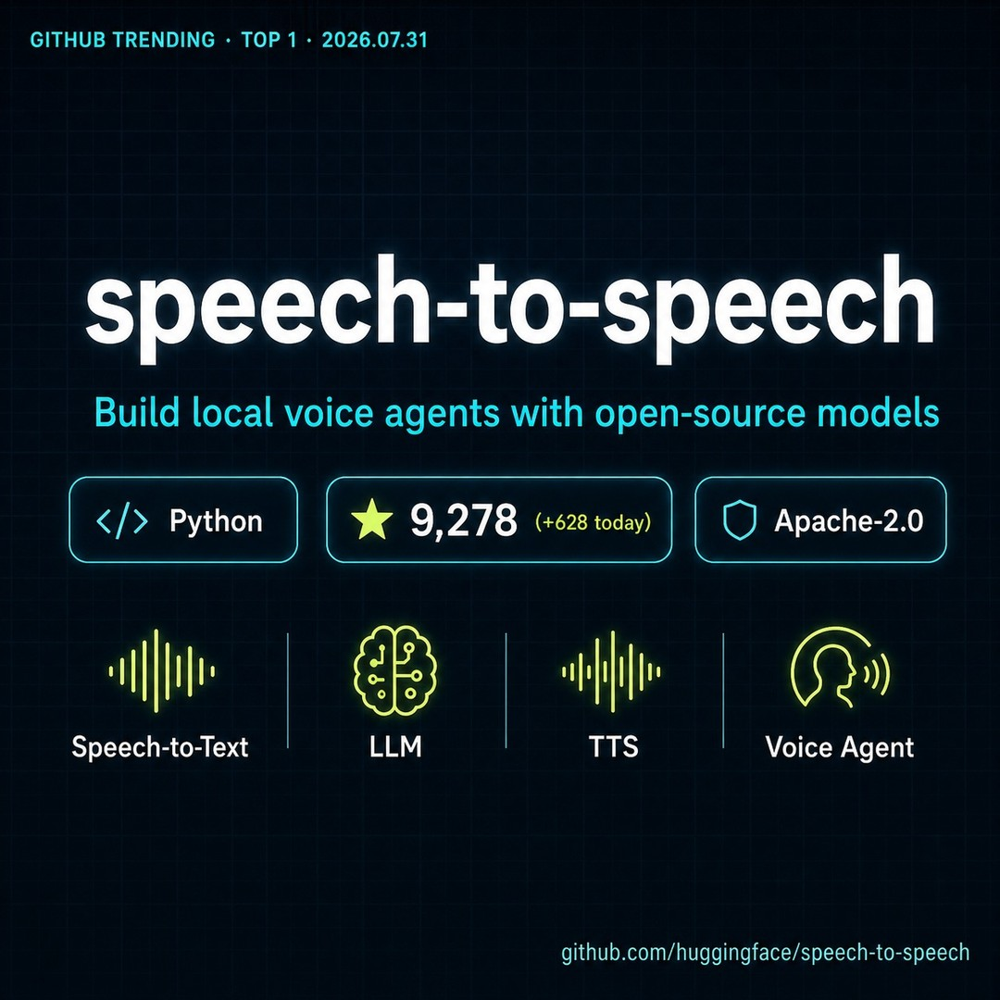

easyanythinghk｜Hugging Face speech-to-speech：本地開源語音 Agent 管線

一句話摘要
Hugging Face `speech-to-speech` 把語音助理拆成可替換的 VAD → STT → LLM → TTS pipeline，並提供 OpenAI Realtime-compatible WebSocket API，適合拿來研究「本地語音 Agent」與「避免被單一雲端供應商綁死」的架構。
社群貼文說了什麼
`easyanythinghk` 的 Threads 重點：
- Hugging Face 出品 speech-to-speech。
- 用開源模型串完整語音流程：語音辨識 → LLM 推理 → 語音合成。
- 可在自己電腦上跑，全程本地、零訂閱。
- 貼文稱當日 GitHub Trending 第一名、單日增加 628 stars。
- 留言補出 GitHub repo：`github.com/huggingface/speech-to-speech`。
官方 GitHub 查核
GitHub API / README 查核：
- repo：`huggingface/speech-to-speech`
- 描述：Build local voice agents with open-source models
- license：Apache-2.0
- stars：約 9.5k（查核當下）
- forks：約 1.1k
- README：A low-latency, fully modular voice-agent pipeline: VAD → STT → LLM → TTS。
- API：exposed through an OpenAI Realtime-compatible WebSocket API。
- LLM slot 可接 OpenAI-compatible protocols、HF Inference Providers、vLLM、llama.cpp。
- README 提到可用 Transformers / Hugging Face Hub 上的模型，且有 Faster Whisper、Whisper MLX、Paraformer、ChatTTS、MMS TTS 等後端選項。
圖片 OCR
封面可見：
- GITHUB TRENDING · TOP 1 · 2026.07.31
- speech-to-speech
- Build local voice agents with open-source models
- Python
- 9,278 stars（+628 today，封面截圖數字）
- Apache-2.0
- Speech-to-Text / LLM / TTS / Voice Agent
- github.com/huggingface/speech-to-speech
為什麼值得收藏
語音 agent 的難點不是只有模型效果，而是整條即時音訊管線：
- VAD：何時開始/結束聽。
- STT：把語音轉文字。
- LLM：理解、推理、工具調用。
- TTS：低延遲回覆語音。
- WebSocket / streaming：讓使用者覺得是在即時對話，而不是等整段生成完。
`speech-to-speech` 的價值是把這些階段模組化，讓研究者或開發者能替換其中一段，而不是被單一 realtime voice API 綁住。
對 Luarn / Hermes 的可用角度
- 本地語音 Agent 實驗：適合做課程 demo，展示語音 pipeline 的組成。
- 企業資安：敏感語音不一定要全部送到雲端 API，但仍要管理本機錄音與 log。
- Provider 可替換：可比較 OpenAI Realtime API、ElevenLabs Conversational AI、xAI speech-to-speech、本地 Whisper/TTS 組合。
- Hermes voice mode 類功能可借鑑這種「模組可替換」設計。
風險與限制
- 「本地、零訂閱」不等於零成本：仍需 GPU/CPU、記憶體、模型下載、維護、延遲調校。
- 低延遲體驗取決於 VAD/STT/TTS 模型、硬體與 streaming 實作。
- 本地部署仍要處理麥克風權限、錄音保存、個資、企業資料治理與稽核。
- GitHub stars / trending 是熱度訊號，不等同生產穩定度；正式導入前需壓測。